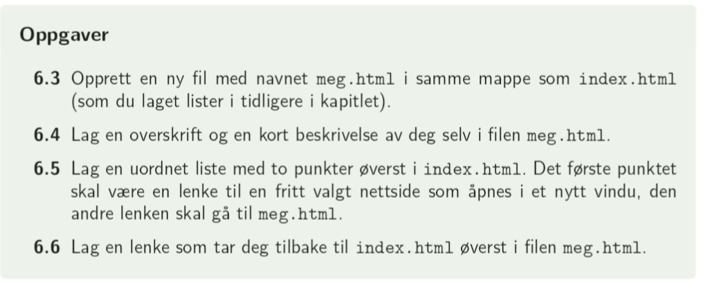
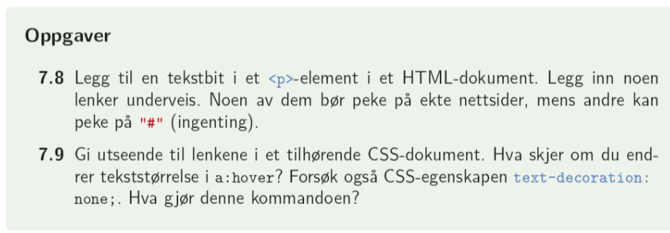

Lenker er svært sentralt i nettsider: Det er det som knytter hele nettet sammen. HTML = hypertext markup language, og nettopp hyperteksten er lenkene. Lenker kan enten lede deg til eksterne nettsider, eller knytte sammen ulike sider på ett og samme nettsted.
En lenke angis med taggen < a > < /a >. I starttaggen legger vi attributtene href, der adressen til siden ligger, og target, som sier noe om hvordan siden skal åpnes.
< a href="https://oslo-katedral.vgs.no/" target = "_blank" >Oslo katedralskole < /a >
er koden for å linke til kattas side der siden åpnes i en ny fane:
Oslo katedralskole
Dette er en absolutt lenke.
Vi kan også lenke til interne nettsteder, dette kalles relative lenker:
< a href = "kap_6_4.html" target = "_blank">Bilder< /a >
er koden for å linke til min egen html-fil. Pass på filplassering her akkurat som i css-filer!
Lister
I tillegg til vanlig stilsetting, kan vi for lenker skille mellom utseende for sider som er besøkt vs ikke besøkt, samt stilsetting når musepekeren hovrer over:
a{
/* stilsetting som gjelder for lenker generelt */
}
a:link{
/* stilsetting som gjelder for sider som ikke er besøkt (samme som a{})
}
a:visited{
/* stilsetting som gjelder når siden er besøkt
}
a:hover{
/* stilsetting som gjelder når musepekeren hovrer over */
}
a:active{
/* stilsetting som gjelder når lenken klikkes på */
}
Oslo katedralskole
< a id="kattalink" href = "https://oslo-katedral.vgs.no/" target = "_blank" > Oslo katedralskole < /a >
I css:
#kattalink{
color: #34aac1;
text-decoration: underline;
}
#kattalink:visited{
color: #c134aa;
text-decoration: underline;
}
#kattalink:hover{
color: #aac134;
text-decoration: line-through;
cursor: pointer;
}
#kattalink:active{
color: #c14b34;
text-decoration: none;
cursor: no-drop;
}
< a > < /a > er ikke bare noe vi legger inn i tekst: tabellceller, listeelementer, bilder osv. kan også lenke videre. Dette fungerer på akkurat samme måte som for vanlig tekst:
< a href = "sidedetlinkestil.no" target = "_blank"> < img = "bildefil.jpeg" > < /a >
Her er koden for bildet følgende:
< a href="https://vektlofting.klubb.nif.no/Sider/Hjem.aspx"> < img src="media/rykk.jpeg" > < /a>
1. I læreboka på side 55: oppgave 6.3 til 6.6

2. I læreboka på side 71: oppgave 7.8 og 7.9

3. Lag en side der du legger inn både absolutte og relative lenker. Lenkene skal være tekst, bilder og listeelementer.
Stilsett lenkene slik at de er ulike når siden er besøkt, hover og aktiv.